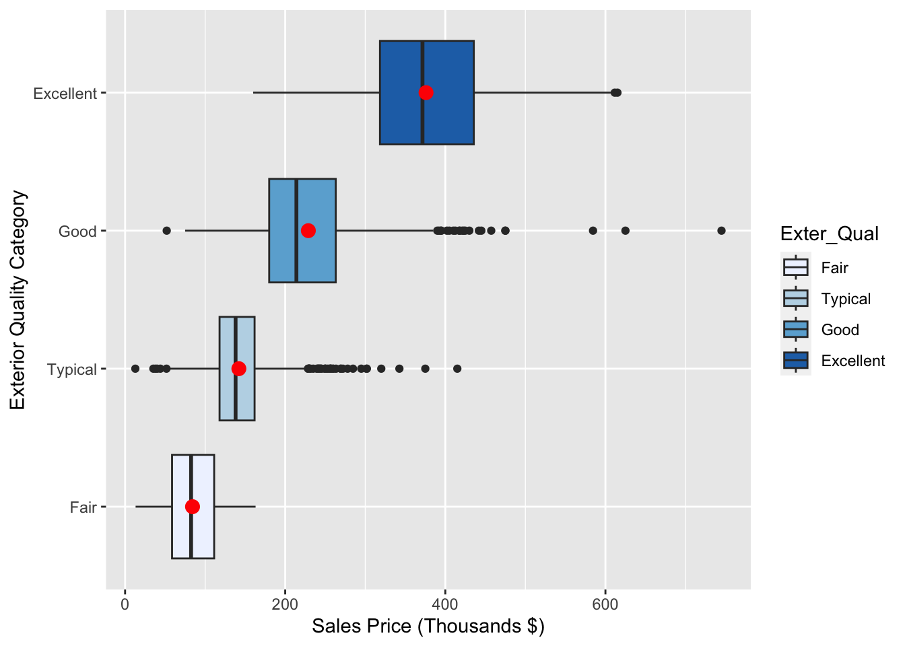
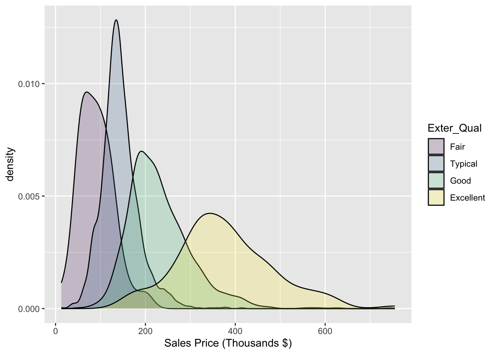

All the modeled signal is the rest of the equation which is called the deterministic component
\(x_1, \cdots, x_k\) are the explanatory variables
\(y\) is the response variable
Typically linear models are used in an explanatory model fashion–we are trying to answer how our explanatory variables are related to our response. We are not predicting the response. Models tend to be simpler and we focus on p-values and confidence intervals for interpretation.
1.1 Honest Model Assessment
Before you look for any relationships, you should split into training, validation and test samples.
Different rules of thumb for splits:
Lots of data? 50-40-10 split
Not so much data? 70-20-10 split
Not enough data? Use Cross-Validation
1.1.1 The Overfitting Problem
Models will capture nuances of the data on which they’re built (training data)
When these “patterns” do not hold up in validation or test, the model performance suffers. We call this overfitting.
Overfitting Example
1.2 Train-Test Split in R
Code
library(tidyverse)
── Attaching core tidyverse packages ──────────────────────── tidyverse 2.0.0 ──
✔ dplyr 1.1.2 ✔ readr 2.1.4
✔ forcats 1.0.0 ✔ stringr 1.5.0
✔ ggplot2 3.4.2 ✔ tibble 3.2.1
✔ lubridate 1.9.2 ✔ tidyr 1.3.0
✔ purrr 1.0.1
── Conflicts ────────────────────────────────────────── tidyverse_conflicts() ──
✖ dplyr::filter() masks stats::filter()
✖ dplyr::lag() masks stats::lag()
ℹ Use the conflicted package (<http://conflicted.r-lib.org/>) to force all conflicts to become errors
An association is the expected value of one variable changes at different levels of the other variable.
A linear association between two continuous can be inferred when the general shape of a scatter plot is similar to a straight line.
One way to see associations with a continuous variable across our categorical variable is by using side-by-side boxplots or overlaid histograms:
Code
ggplot(train, aes(y = Sale_Price /1000, x = Exter_Qual, fill = Exter_Qual)) +geom_boxplot() +labs(y ="Sales Price (Thousands $)", x ="Exterior Quality Category") +stat_summary(fun = mean, geom ="point", shape =20, size =5, color ="red", fill ="red") +scale_fill_brewer(palette ="Blues") +coord_flip()

Code
ggplot(ames, aes(x = Sale_Price /1000, fill = Exter_Qual)) +geom_density(alpha =0.2, position ="identity") +labs(x ="Sales Price (Thousands $)")

In the density plot, variance is different between groups and the Excellent quality seems to have a higher overall mean
3 One-Way ANOVA
One-Way ANOVA is a test of relationship between categorical variable and quantitative response.
One-Way refers to only one factor (e.g. a group of quality ratings).
We are comparing \(k\) levels of our predictor variable and seeing if there are any statistically significant difference in their mean response.
\(H_0: F_1 = F_2 = F_3 = F_4\)
\(H_a:\) Atleast one mean is different
In the ANOVA model, instead of using one-hot encoding for our variables, we use reference coding where we drop one of the levels. The level dropped will be the reference level.